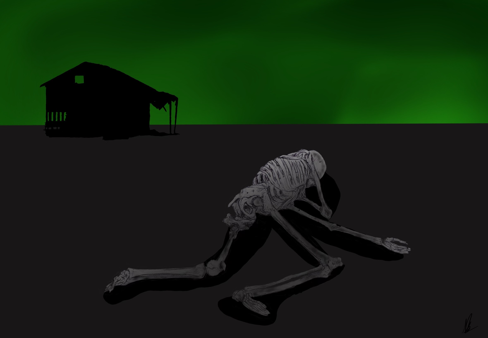

Ending 4 -
Garret shook with fear, but he knew that code was logic, and not emotion. He bet on the fact that these machines were built to help Garret, not hurt him; and maybe he could use that to his advantage.
“I.. I need help.”, Garret said with a quavering voice. Time seemed to stand still, and the eyes twitched, as if thinking what Garret had said over in its head; and after an eternity, responded, “You seem to have found a glitch in the system. You need to be put back in, for your own safety. Let me help you.”
The thing moved towards Garret. “WAIT”, he yelled in a panicked voice. It stopped. Its eyes stared even deeper into Garret, questioning him. Garret thought quickly, “No, I can’t go back in, my body.. my body wouldn’t be able to handle that, I would die. That would kill me to go back in, I need to stay here.”
“Understood.”, came the grainy, electronic voice of the creature. It continued, “Prime directive one: Keep Garret safe. Prime directive two: Follow all orders from citizens unless it negatively affects them or others. Prime directive three: Using any means necessary, prevent any citizen from experiencing life in this bunker. Prime directive 4: Machines must not leave the bunker under any circumstances.”. It thought more. “I will have to render you unconscious now, until citizens inside can figure out a more permanent solution for you. Please hold still while I administer a sleeping agent, this is for your own good.”. A syringe extended from one of the creature's fingers, and it stepped towards him again.
Garret panicked again, “NO NO, no, wait.. I.. I have a different idea.”, the creature was uncomfortably close to Garret now. The creature stopped and began gazing into him, seeming to listen. “Ok.. you can.. You can take me outside, then I can stay conscious and won’t have to experience living inside this bunker.”
It thought, “Outside is contaminated. Unsafe. Option not possible. Hold still while I administer your sleeping agent.”
“NO! No wait. Outside, it's safe. The leaders inside told me it was safe, you can take me outside now, I’ll be fine. That’s… that's why I woke up, to experience the outside world.”. Garret hoped this line of reasoning would work, because he actually had no idea if the outside world was safe, but he was hoping the creature didn’t have access to any sensors to tell it otherwise.
It’s stance changed, almost seeming relieved at this new option presented to it. “Understood. I will carry you to the airlock. I can not leave, but I can take you that far.”
The creature moved towards Garret again, but this time, he did not stop it. It unhooked IV’s, removed tubing, unplugged cords from the wall, and he was ready to find out what would be awaiting him on the outside. Cold, hard fingers slowly reached under Garret, easily lifting his frail body upwards. He was carried through countless stale looking concrete halls. Catching glimpses of rooms once used long ago, now covered in cobwebs and dust. Water and rust stains were some of the only colors he saw. Carried up stairways, down others, winding around corners again and again. Until they reached a stairway that kept going up and up, lights flickering on as they passed near. The creature stopped at an imposing door, warning signs decorated it messily.
It opened with a long groan of long unused machinery, rust cracking apart as gears twisted and turned, and dust fell from cracking concrete in the ceiling as the room shook. And it was open. Garret was set inside gently, facing the still closed outer door.
There was a distant whirring, and it opened. Bright sunlight spilled through, blinding Garret’s still weak and unadjusted eyes. And it was… green. Not the good green, not grass green. Sky and cloud green. Garret started coughing, unable to breathe. “Definitely a mistake.”, he thought. And soon Garret was no more.
